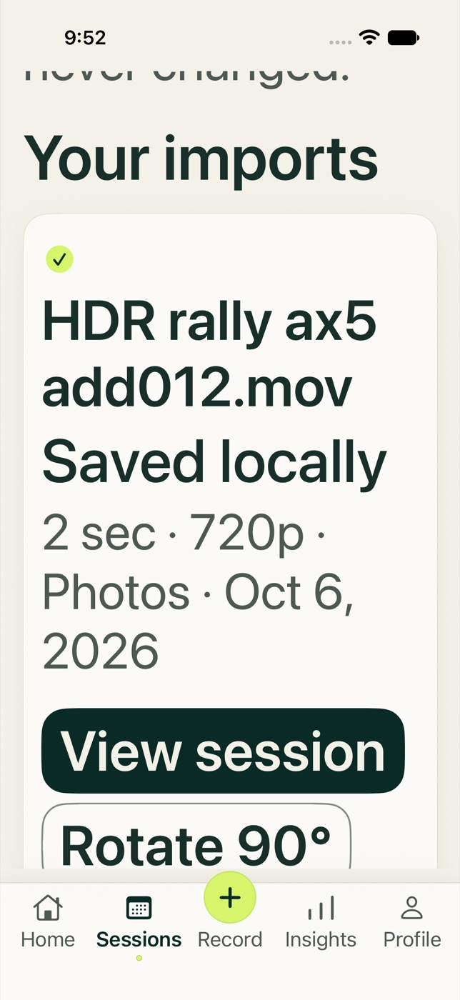
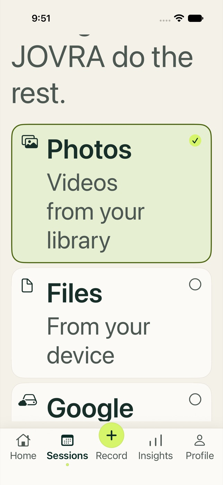
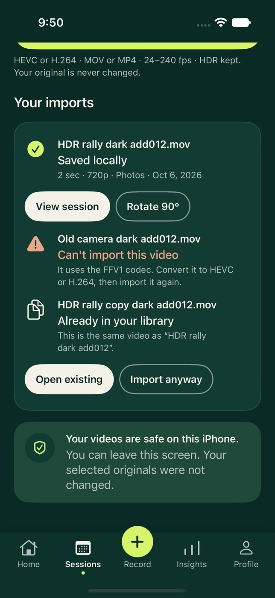
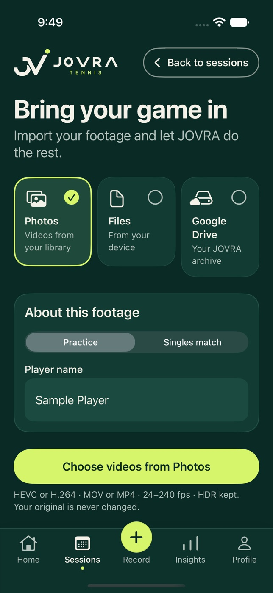
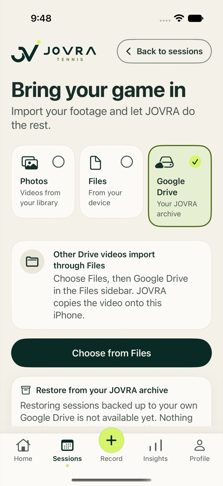
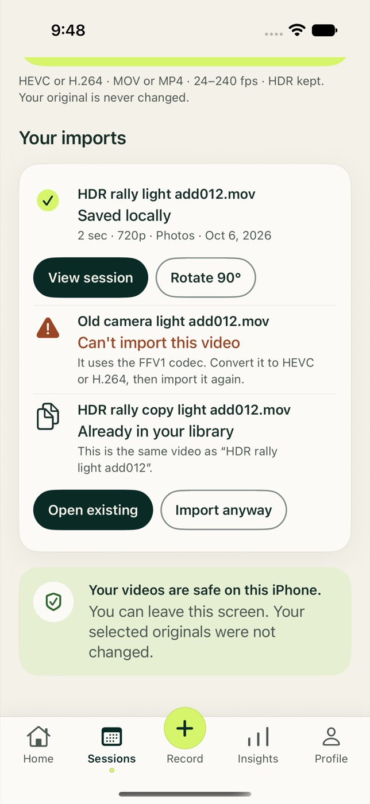
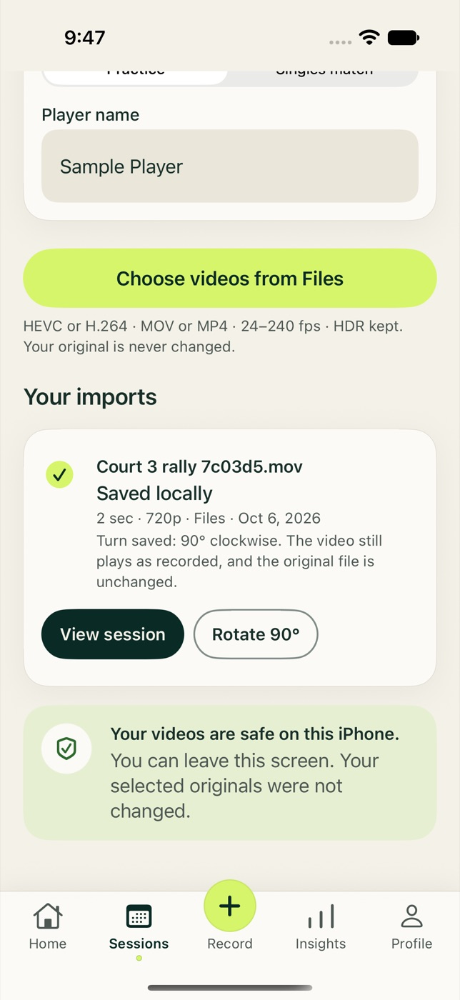
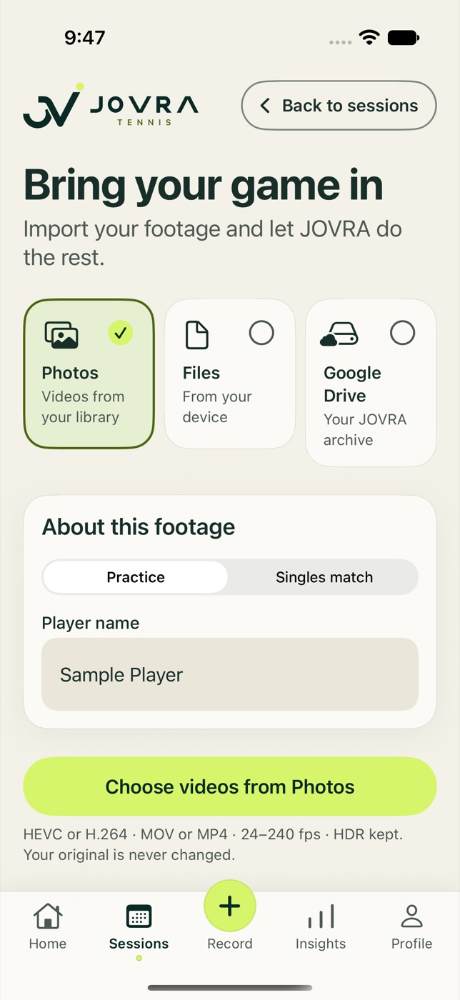

References are AI-generated rasters: they guide layout, rhythm, palette and hierarchy; the written spec wins.
Screen 07 · s07-ax5-import-results
Reference: 07-import-processing.png

Simulator: s07-ax5-import-results.jpg
Reviewer: Claude (T26 agent) — AX5: "Your imports" with the first row: glyph above the words, name, "Saved locally" and metadata wrapping on three lines, View session and Rotate 90° stacked full-width; nothing truncates. The full audit runs here including contrast, with the helper's one logged exception for an unplaceable SwiftUI node while tile text is under the tab bar.
Screen 07 · s07-ax5-import-sources
Reference: 07-import-processing.png

Simulator: s07-ax5-import-sources.jpg
Reviewer: Claude (T26 agent) — AX5: the source tiles become full-width rows (Photos selected with border and check, Files, and the top of Google Drive above the tab bar), each glyph fixed-size so the words keep the width; nothing truncates; textClipped and Dynamic Type audits pass.
Screen 07 · s07-dark-import-results
Reference: 07-import-processing.png

Simulator: s07-dark-import-results.jpg
Reviewer: Claude (T26 agent) — the same three rows in dark tokens (forest card, ivory text): palette check for saved, attention ink for the FFV1 row, duplicate with Open existing (ivory fill) / Import anyway (outline) legible on forest, and the safe card; no state is carried by colour alone (each row has a status title and glyph).
Screen 07 · s07-dark-import-sources
Reference: 07-import-processing.png

Simulator: s07-dark-import-sources.jpg
Reviewer: Claude (T26 agent) — dark tokens throughout (forest surfaces, ivory text, chartreuse selection border and check); same structure as light; no colour-only state.
Screen 07 · s07-light-import-drive
Reference: 07-import-processing.png

Simulator: s07-light-import-drive.jpg
Reviewer: Claude (T26 agent) — Drive tile selected: explains that other Drive videos import through Files with a direct "Choose from Files" action, and shows the named archive-restore slot (T54) stating plainly that restore is not available yet. No reference panel exists for this state; tokens and card rhythm match the sources view.
Screen 07 · s07-light-import-results
Reference: 07-import-processing.png

Simulator: s07-light-import-results.jpg
Reviewer: Claude (T26 agent) — shows "Your imports" with all three rows in view: saved (2 sec · 720p · Photos · Oct 6, 2026) with View session / Rotate 90°; the FFV1 file in attention ink ("Can't import this video", naming the codec and what to do); and the duplicate ("Already in your library", naming the saved session) with Open existing / Import anyway; the positive safe card below mirrors the reference's "Recording is safe. You can leave this screen." Deviation by design: the reference's single "Selected video" card and analysis timeline belong to T27's processing route, which a single clean import presents.
Screen 07 · s07-light-import-saved
Reference: 07-import-processing.png

Simulator: s07-light-import-saved.jpg
Reviewer: Claude (T26 agent) — a single Files import after closing the processing route it presented: Saved locally · 2 sec · 720p · Files · Oct 6, 2026 (the file's own Sample date), and after Rotate 90° the row says only what happened: "Turn saved: 90° clockwise. The video still plays as recorded, and the original file is unchanged." (Replay does not apply the turn yet); metadata line style matches the reference.
Screen 07 · s07-light-import-sources
Reference: 07-import-processing.png

Simulator: s07-light-import-sources.jpg
Reviewer: Claude (T26 agent) — matches the top of the reference: lockup, display heading "Bring your game in" (brief copy; the PNG's trailing period is a generated-image artefact), the reference subtitle, three source tiles with the selected tile marked by a chartreuse check and border. Deviation: the Drive tile uses an SF Symbol, not the Google logo (CLAUDE.md rule 6), and says "Your JOVRA archive" (story 105). Added "About this footage" (player or explicit singles match, merged in #457) and the Choose action the reference omits.